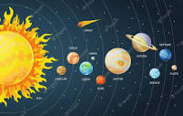

El sistema solar es el sistema planetario que liga gravitacionalmente a un conjunto de objetos astronómicos que giran directa o indirectamente en una órbita alrededor de una única estrella conocida con el nombre de Sol.
El Sol (del latín sol, solis, ‘dios Sol invictus’ o ‘sol’, a su vez de la raíz protoindoeuropea sauel-, ‘luz’)4 es una estrella de tipo-G de la secuencia principal y clase de luminosidad V que se encuentra en el centro del sistema solar y constituye la mayor fuente de radiación electromagnética de este sistema planetario.5 Es una esfera casi perfecta de plasma, con un movimiento convectivo interno que genera un campo magnético a través de un proceso de dinamo. Cerca de tres cuartas partes de la masa del Sol constan de hidrógeno; el resto es principalmente helio, con cantidades mucho más pequeñas de elementos, incluyendo el oxígeno, carbono, neón y hierro.
Se formó hace aproximadamente 4600 millones de años a partir del colapso gravitacional de la materia dentro de una región de una gran nube molecular. La mayor parte de esta materia se acumuló en el centro, mientras que el resto se aplanó en un disco en órbita que se convirtió en el sistema solar. La masa central se volvió cada vez más densa y caliente, dando lugar con el tiempo al inicio de la fusión nuclear en su núcleo. Se cree que casi todas las estrellas se forman por este proceso. El Sol es más o menos de edad intermedia y no ha cambiado drásticamente desde hace más de cuatro mil millones de años, y seguirá siendo bastante estable durante otros 5000 millones de años más. Sin embargo, después de que la fusión del hidrógeno en su núcleo se haya detenido, el Sol sufrirá cambios importantes y se convertirá en una gigante roja. Se estima que el Sol se volverá lo suficientemente grande como para engullir las órbitas actuales de Mercurio, Venus y posiblemente la Tierra.
La Tierra y otros cuerpos (incluidos otros planetas, asteroides, meteoroides, cometas y polvo) orbitan alrededor del Sol. Por sí solo, representa alrededor del 99,86 % de la masa del sistema solar. La distancia media del Sol a la Tierra fue definida exactamente por la Unión Astronómica Internacional en 149 597 870 700 metros9(aproximadamente 150 millones de kilómetros). Su luz recorre esta distancia en 8 minutos y 20 segundos.
Los ocho planetas que componen el sistema solar son, de menor a mayor distancia respecto al Sol, los siguientes: Mercurio, Venus, Tierra, Marte, Júpiter, Saturno, Urano y Neptuno.
Los planetas son cuerpos que giran formando órbitas alrededor de la estrella, tienen suficiente masa para que su gravedad supere las fuerzas del cuerpo rígido, de manera que asuman una forma en equilibrio hidrostático (prácticamente esférica), y han limpiado la vecindad de su órbita de planetesimales (dominancia orbital).
Los planetas interiores son Mercurio, Venus, la Tierra y Marte y tienen la superficie sólida. Los planetas exteriores son Júpiter, Saturno, Urano y Neptuno, también denominados planetas gaseosos porque contienen en sus atmósferas gases como el helio, el hidrógeno y el metano, y no se conoce con certeza la estructura de su superficie.